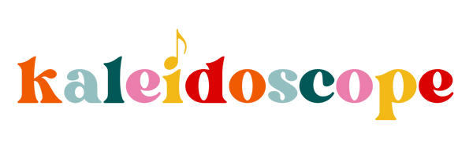
Berlin’s Kaleidoscope is a tour-de-force of musical talent and comedic storytelling that’s making waves and blowing up the genre of what improvised musicals can be.
Become part of the show that’s been touching hearts and selling out theaters wherever it goes.
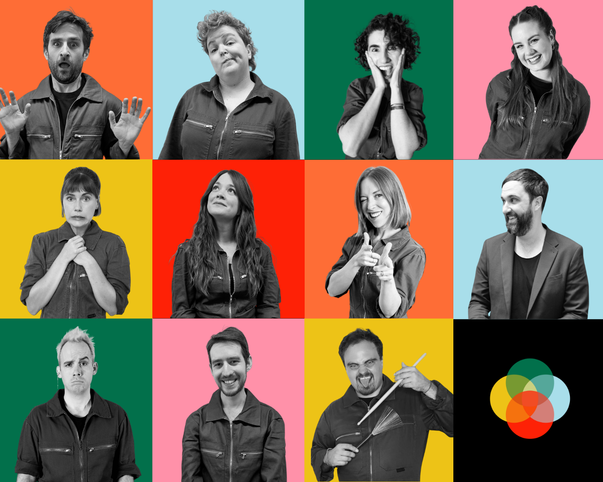
Catch our next fully improvised performance.
Fetching performance dates...
The voices, minds, and musicians behind the magic.
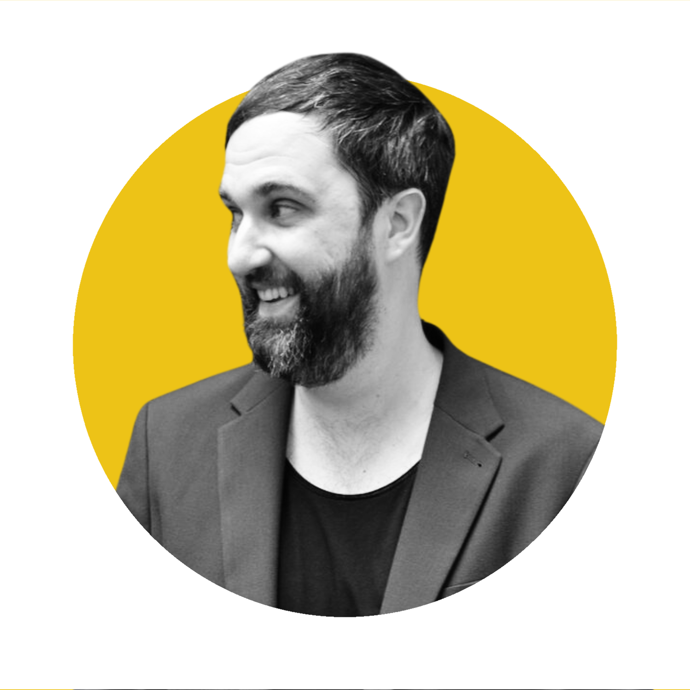
is a stage director and writer based in Germany, originally from Texas. His directing resume includes original scripts, musical theatre, and the classical repertoire in both English and German. He has worked extensively in the U.S. and Germany and has also worked as a guest artist internationally in Switzerland, Spain, and Japan. A Goethe Institute Directing Fellow and former Director in Residence at the English Theatre Berlin, Brian has been directing Kaleidoscope since 2023, bringing his unique vision and expertise to the group.
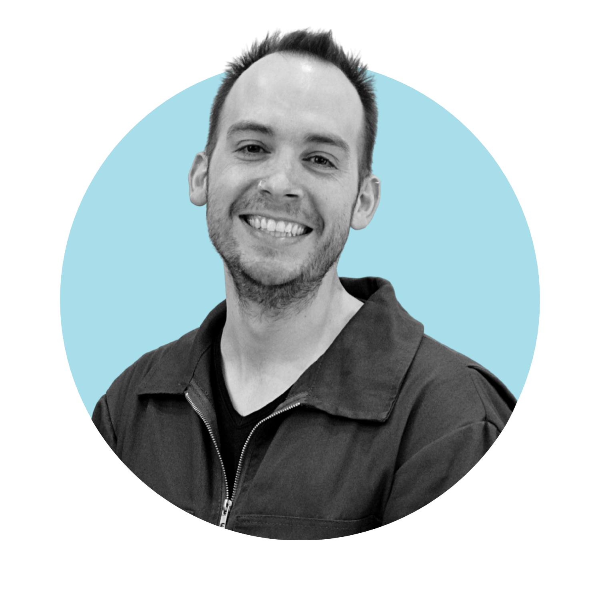
is an accomplished performer who regularly brings their talent as an accompanist to the musical improv scene in Berlin. They first discovered musical improv in NYC while helping a friend clean their apartment (“just play some chords and I’ll sing”), and immediately fell in love with that magical feeling only musical improv can bring. When not playing with Kaleidoscope, you can find Joseph living out their love of music through performing and teaching private music here in Berlin
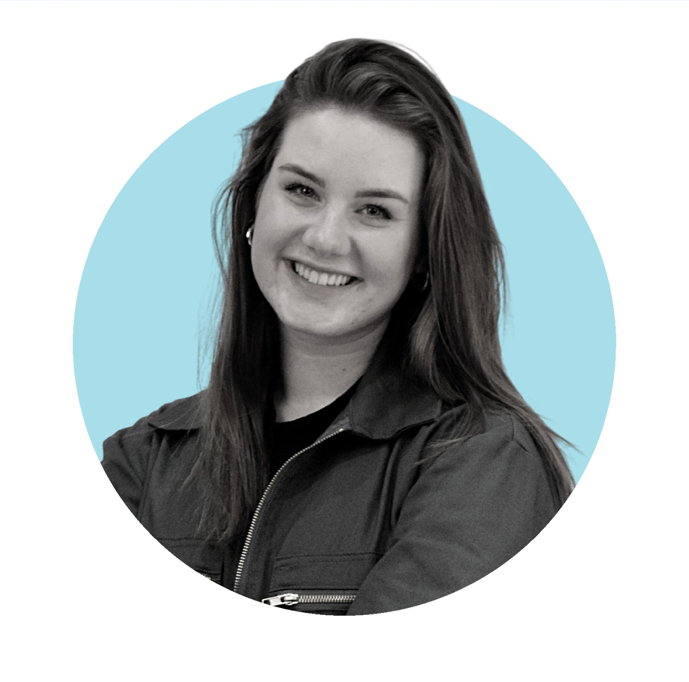
is a Chicago native who performed across America before moving to Berlin. With a BFA in Music Theatre from IWU and additional studies in Literature at the University of Cambridge, Angie has portrayed countless roles in scripted musicals. In addition to performing, she created the Kaleidoscope branding and marketing and now serves as its creative consultant. She is currently singing aboard Tui Mein Schiff 1, bringing her talents to audiences at sea.
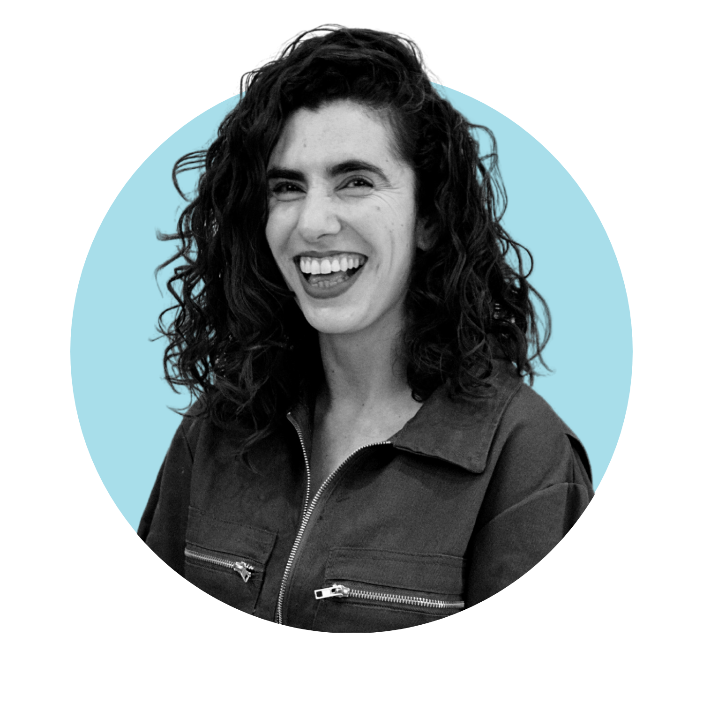
is a Luso-American improviser, performer, and voiceover artist based in Berlin since 2017. Alongside Kaleidoscope, she performs with BRACE! BRACE! (Comedy Cafe Berlin) and teaches musical improv/short-form at ImprovWorks Berlin. She also performs with Musical Theater Society Berlin, most recently as Diana in A Chorus Line and Almira Gulch in The Wizard of Oz. As a voiceover artist, she has lent her voice to clients such as Deutsche Welle, Haba, FoodPanda, Paradox Interactive, AbletonLive and DeepPrint Games.
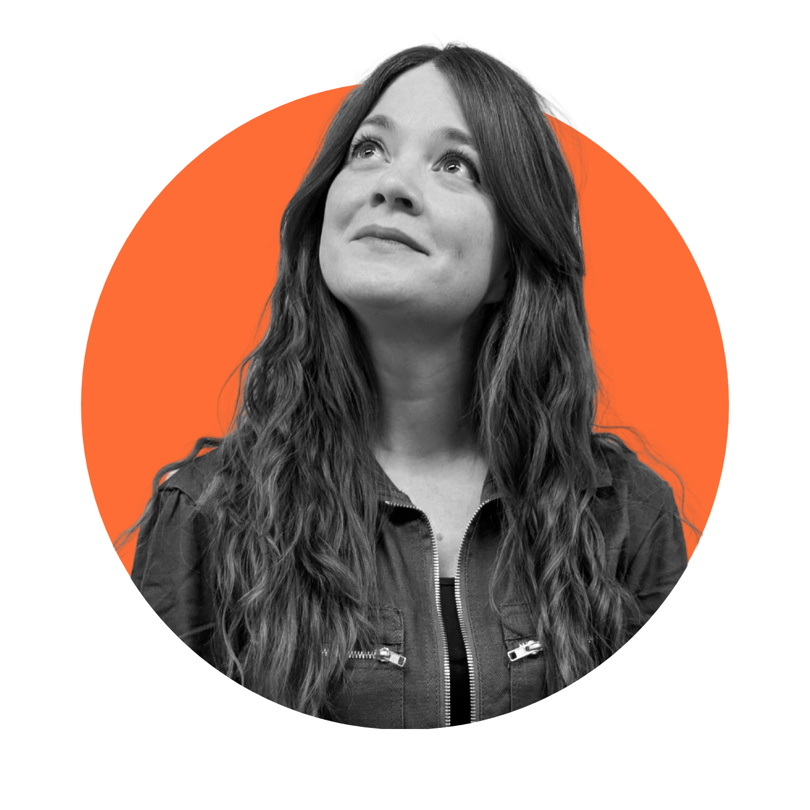
a true Louisiana girl at heart, spent a little time in Texas before finding her way to Berlin. With a background from the Institution Theater in Austin and the Comedy Cafe Berlin, she’s been making audiences laugh since 2015. After hitting pause to welcome her sweet daughter into the world, Jenna’s back on stage and ready to dazzle with a mix of southern sass, sharp wit, and a whole lotta charm. Hold onto your hats, y’all—this mama brings the drama!
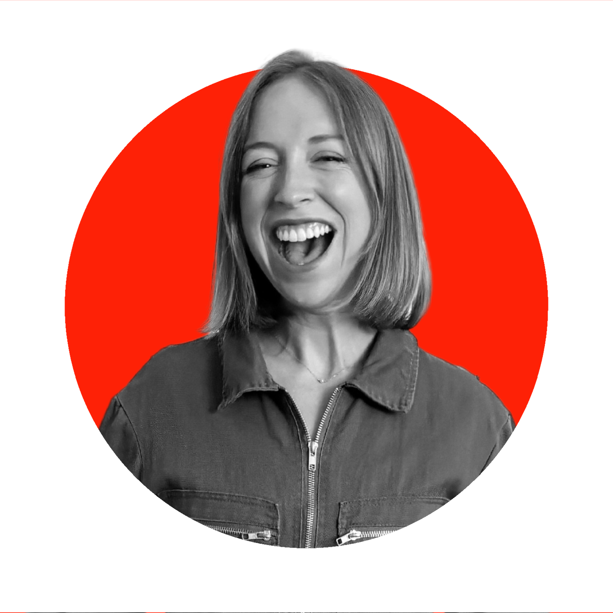
has been improvising pretend since 1994 when she debuted her singing career in front of her grandma's fireplace. She hasn't stopped singing since and has played leading roles in Little Women, Urinetown, and Pippin in theaters around the USA. Having trained at Second City and Indiana University, she is proud of her US Midwest roots, so don't even get her started on cornfields or the Indy 500. She now lives in Berlin with her dog, Willow, who is the best girl ever, and husband, Nick, who is the best man ever. Katie is overjoyed to be invited to play with her Kaleidofriends, and yes... Katie Love is her real name.
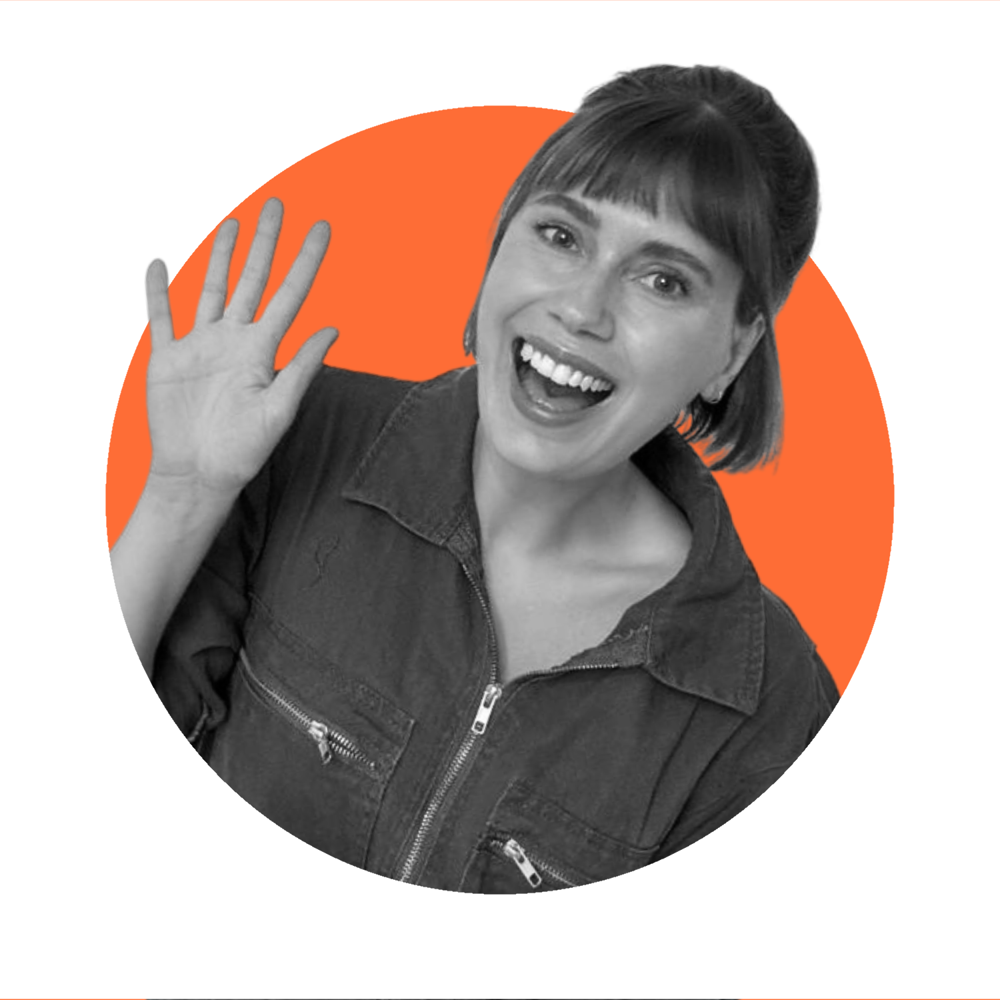
is an Australian soprano, actress, and improviser. She trained at the Victorian College of the Arts and began her career at just 17, playing Jenny Lind in the musical Barnum. She has since performed with Opera Australia, Victorian Opera, Gertrude Opera, Chunky Move, and The Royal Melbourne Philharmonic. Currently, she’s nourishing her love of musical theatre and improv with Kaleidoscope while also enjoying a more relaxed Berliner lifestyle. In addition to her work with Kaleidoscope, Michelle co-founded the improv group Haircut, which regularly sells out sh
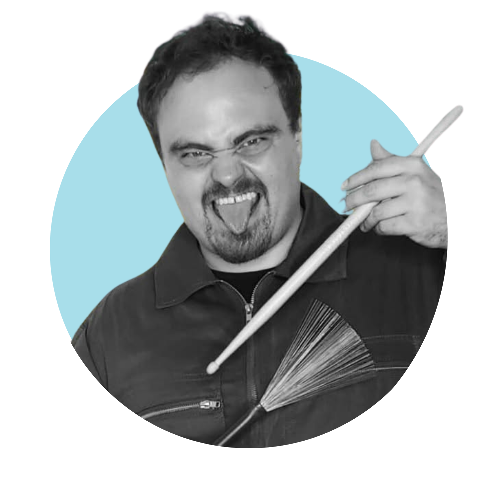
is a half-Colombian, half-Norwegian actor, comedian, and musician who relocated to Berlin to further fuel his creative passions. A student of acting at the Actor's Studio Berlin, Juan is also a self-taught drummer who has been playing since he was 18, performing with various bands across different genres. He joined Scratch Theater in 2016, where he dove head-first into improv, and has since explored stand-up comedy and clowning workshops. Now with Kaleidoscope, Juan is excited to blend his dual loves of acting and music.
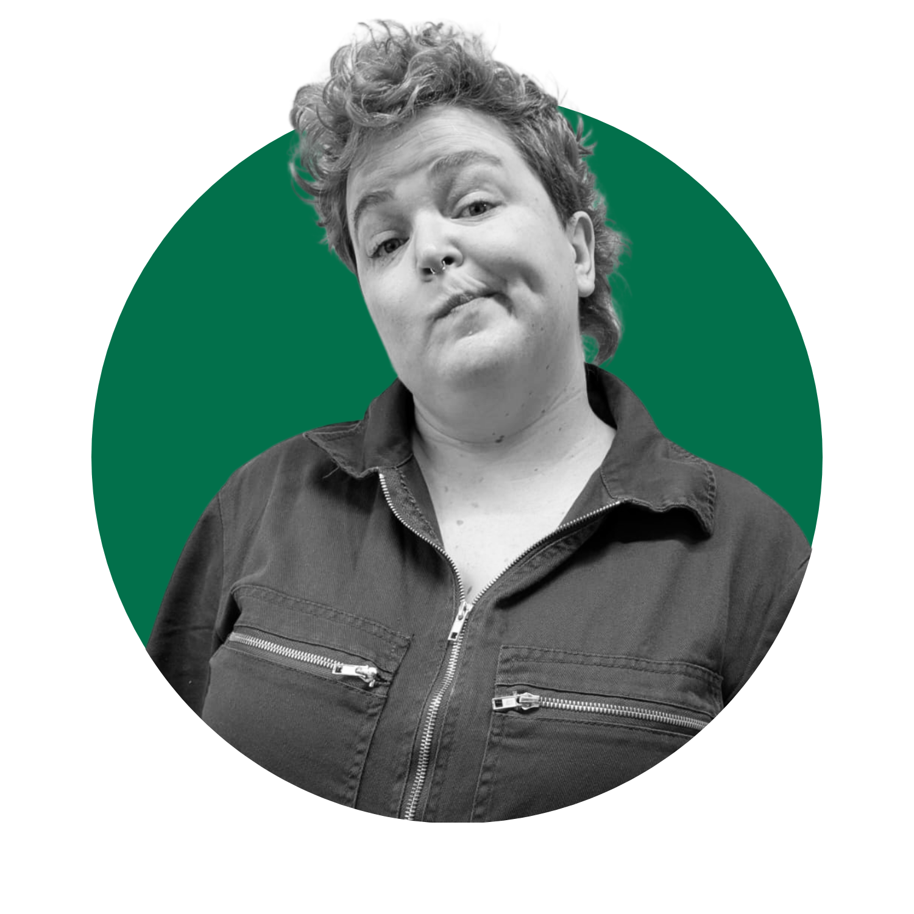
is an American improviser and musical weirdo who started improv in 2024 and never looked back. Obsessed with character voices, physical play, and theatrical chaos, they mix pop-rock instincts with a deep love of musical theater. Taylor performs with “Piss Baby” at Comedy Café Berlin and once made strange and lovely things with producer Andrew Underberg. Their dream? A Berlin piano bar with the spirit of Martuni’s and Marie’s Crisis. Eternal thanks to teachers Joel Parnis and David Cassel.
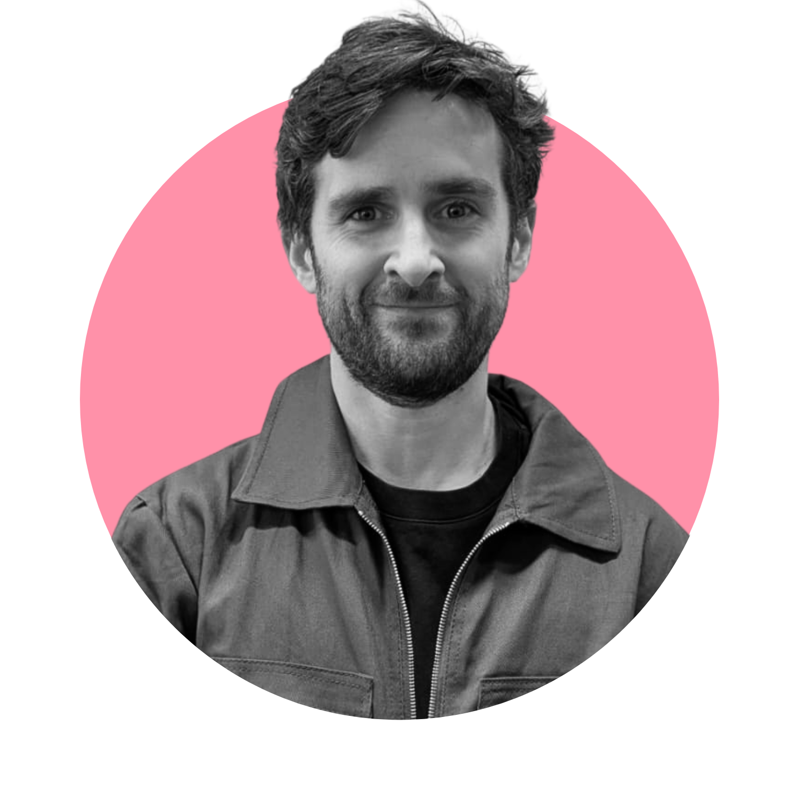
is an improviser and musician from the UK. He moved to Berlin in 2021 and learned long-form improv at Comedy Cafe Berlin. Jason studied music at Platform One Music College on the Isle of Wight and later at Chichester University. As an improviser, he performs regularly at Comedy Cafe Berlin on a house team and with several indie teams, including Ex-Business Partners and Human Nightmare. His many hobbies include knitting, surfing, snowboarding, vegan baking, and adding crunchy Barbershop harmonies to whatever is being sung in his vicinity.
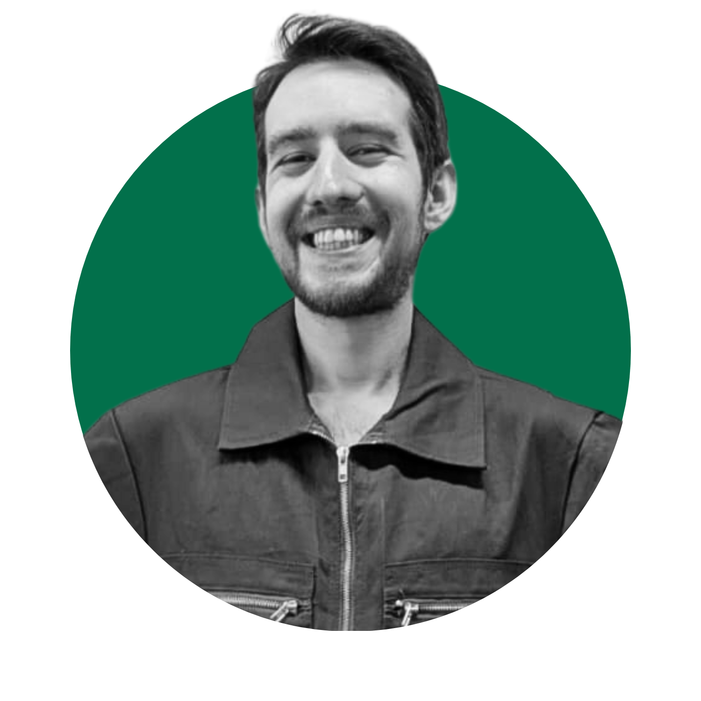
grew up in sunny Puglia, Italy and moved to Berlin in 2024. He’s driven by a passion for music and technology (whether on a computer or a piano, he's always pressing keys!). He started studying classical piano at the age of 5 and after university began delving into jazz piano. During COVID, he discovered the magic of musical theater, which caused many, many trips to London to see shows and an involvement in the Berlin MT scene, most recently playing Keyboard 2 in kind of musical's production of The Guy Who Didn’t Like Musicals.